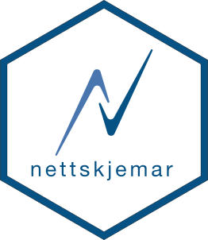

Changelog
Source:NEWS.md
nettskjemar 1.0.2
CRAN release: 2025-06-06
- Uses OAuth client for managing credentials
- Updates to new API url as per official documentation
- Adds thorough test suite with fixtures
nettskjemar 1.0.1
CRAN release: 2025-03-18
- Uses user cache directory for storing nettskjema token.
- ns_get_submission_pdf removed while awaiting fix from UiO IT on its stability.
nettskjemar 1.0.0
CRAN release: 2025-03-17
- Port to Nettskjema API v3
- improved function names, with shorter
nsprefix - Add support for Haven labelled data
- Improved vignettes
- Adds tests
nettskjemar 0.1.4.008
- add functions to download attachments
- binaries returned as integer rather than double
- added general usage vignette
nettskjemar 0.1.4.004
- add linear scale support
- fix bugs in codebook and meta data that did not retrieve question data
- force writing raw codebook and raw metadata to json extension
- add direct check for if a form has codebook
has_codebook()
nettskjemar 0.1.4
CRAN release: 2021-05-20
- simplification of internal code
- added function to find currently IP address
- moved CI to github actions from travis (inconsequential for package use)